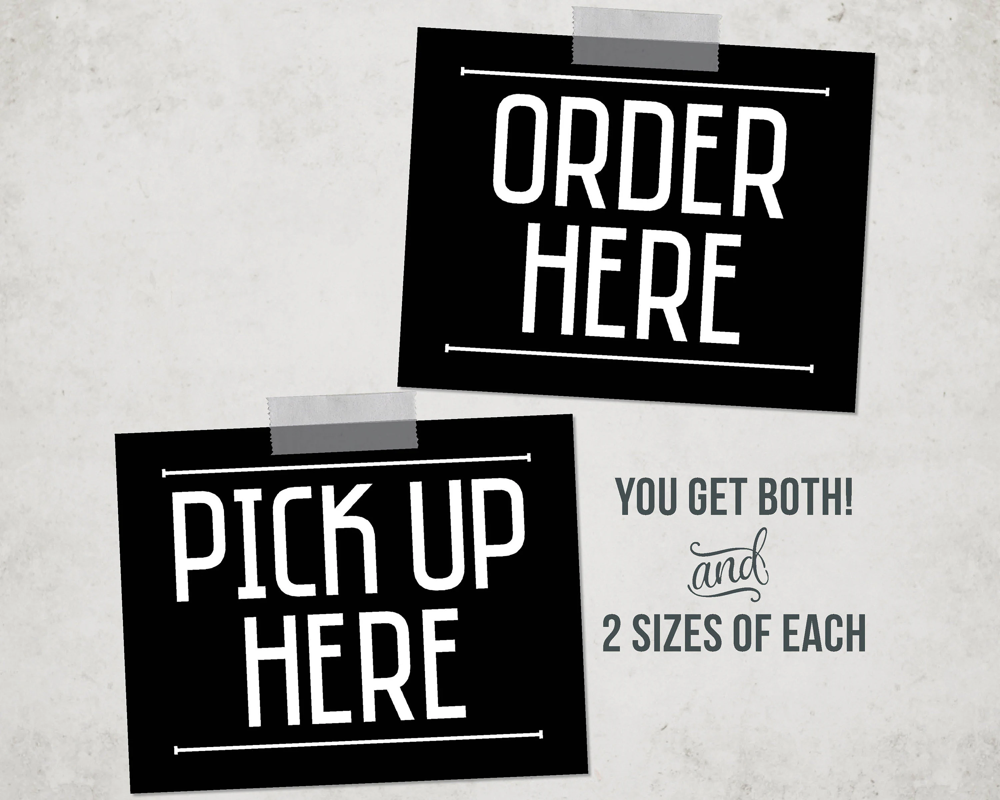
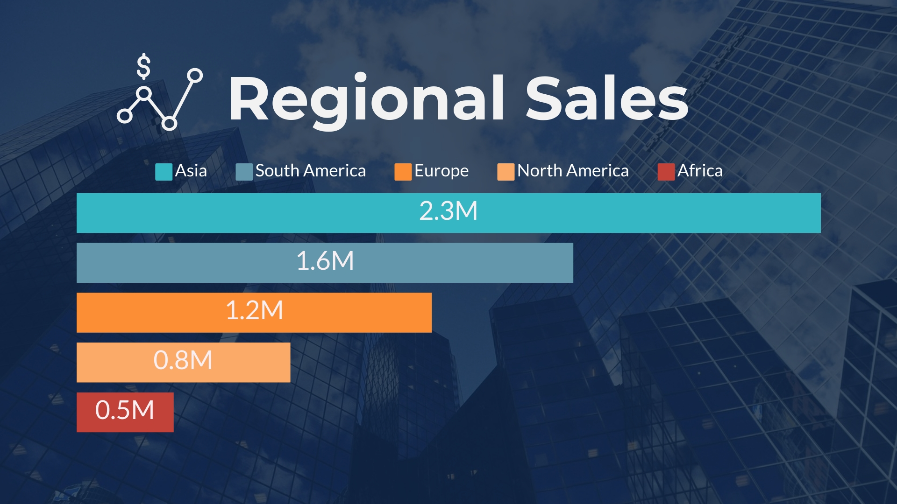

I will be playing the role of an Analytics Consultant for Massachusetts General Hospital (MGH). I have been asked to build a high-level KPI report for the executive team, based on a subset of patient records.
The purpose of the report is to give stakeholders visibility into the hospital's recent performance, and answer business questions. The CEO has asked me to summarize any insights that I can derive from the
sample provided. I will be utilizing MS SQL to perform all data analysis in this project.

In this project I will find trends and patterns to unlock actionable insights. I will utilize the power of Python and its libraries to clean the dataframe by checking for and removing any duplicate rows
of data and null values. Then I will transform the dataframe by extracting the month and the day from the data column to get a more in depth look at the data. I will then process the data by calculating
sums, averages, maximums, and minimum values from the unit sold and unit price columns. Finally, I will answer the business questions about the dataset inquired by the stakeholder.

The dataset for this project was retrieved from the Kaggle website and it provides a comprehensive overview of online sales transactions across different product categories. Each row represents
a single transaction with detailed information such as the order ID, date, category, product name, quantity sold, unit price, total price, region, and payment method. In this project I will find
trends and analyze patterns to unlock actionable insights.
The data for this project was retrieved from the website mavenanalytics.io. The data for this project consist of mock train data for a company named National Rail. In this project, I will demonstrate
how to use Python to load a csv file into a dataframe. I will then demonstrate how to inspect the data, checking for correct dtypes, duplicate values, and the count of unique and null values per column.
I will then demonstrate how to extract the month, day, and hour values from the date columns to further enhance my analysis. Lastly, I will move on to answering and creating visualizations to the business
questions inquired by National Rail.
This dataset has been retrieved from the mavenanalytics.io webite. The data in this project consist of mock train data for National Rail, a company that provides business services to passenger train
operators in the England, Scotland, and Wales. The data also consist of the time frame for the train trips which is from December of 2023 to April of 2024 and includes details on the type of ticket,
the data and time for each trip, the departure and arrival stations, the ticket price, and more.

In this project I will demonstrate how to utilize pandas to import the neccessary libraries for performing analysis and reading in the data to a dataframe. I will then demonstrate how to clean
the data by checking for duplicate, unique, and null values. I will also demonstrate how to perform data transformation by extracting the month value from the date column utilizing pandas
datetime function, which will be used for a more detailed analysis. Lastly, I will demonstrate how to build visualizations for my answers to the given questions utilizing the matplotlib and
seaborn libraries. The data from this project was retrieved from the website mavenanalytics.io. The data consist of a pipeline of business to business sales from a ficticious company that sells
computer hardware, including information on accounts, products, sales teams, and sales opportunities.

The data for this project was retrieved from the website mavenanalytics.io. The data consist of a pipeline of business to business sales from a ficticious company that sells computer hardware,
including information on accounts, products, sales teams, and sales opportunities. In this project I will demonstrate how to import csv files into a created database and how to check the data
for unique, duplicate, and null values. I will then demonstrate how to use functions to extract the month from the date column for more in depth analysis. Finally, I will answer the given
questions associated with this project.
This dataset has been retrieved from the mavenanalytics.io website. The data consist of all space missions from 1957 to August 2022 and includes the details on the location, date, time, the
and the result of the launch. This data also includes the company responsible, the name, the price, and the status of the rocket used for the mission. In this project I demonstrate how to
use Python to utilize bibraries such as pandas to read a csv file into a dataframe, create a dataframe, manipulate and transform rows and columns in a dataframe, to merge multiple dataframes,
and to extract the year and months from columns for detailed analysis. I also demonstrate how to utilize the matplotlib and seaborn libraries to build and create different visuals in the form
of graphs to tell the story of the data.
This is a dataset taken from the mavenanalytics.io website. The data consist of all space missions from 1957 to August 2022 and includes the details on the location, date, time, the
result of the launch, the company responsible, the name, the price, and the status of the rocket used for the mission. In this project I demonstrate how to utilize SQL to import a csv
file into a relational database, as well as extract, transform, and load data from a relational database.
This dataset was retrieved from the mavenanalytics.io website. The dataset consist of fictitious transaction records for a fictitious company named Maven Roasters, which operates out
of three different New York City locations. The dataset includes the transaction date, timestamp and location, along with product-level details. I will demonstrate how to load the raw
dataset into a pandas dataframe, how to clean the dataset if neccessary , how to manipulate and transform the dataset to create new columns, how to process the data to perform calculations
on the neccessary columns, and lastly, how to create and build visuals for my findings.

This is a dataset taken from the mavenanalytics.io website. The dataset consist of fictitious transaction records for a company named Maven Roasters, which operates out of three
different New York City locations. The dataset includes the transaction date, timestamp and location, along with product-level details. I will demonstrate how to load a raw dataset
into a database, how to clean the dataset if neccessary, how to manipulate and transform the dataset to create new columns, how to process the data to perform calculations on the
neccessary columns, and lastly, how to export the dataset into PowerBi for visuals.

This dataset is from the mavenanalytics.io website. In this project, I will be analyzing a quarter's worth of orders from a fictitious restaurant serving international cuisisne,
including the date and time of each order, the itmes ordered, and additional details on the type, name, and price of the items. In this project, I will demonstrate how Python can
be used to clean, transform, and create data visuals.
This dataset is from the mavenanalytics.io website. In this project, I will be analyzing a quarter's worth of orders from a fictitious restaurant serving international cuisisne,
including the date and time of each order, the itmes ordered, and additional details on the type, name, and price of the items. In this project, I will demonstrate how SQL can
be used to clean, transform, and manipulate data to answer business questions and find actionable insights. This project is a copy of the above project, however, it is beinig
replicated utilizing SQL.

This dataset has been retrieved from the website mavenanalytics.io. The data consist of a year's worth of sales from a ficticious pizza pizza company that includes the date and
time of each order, the type of pizza sold, the size of the pizza, the ingredients, and the quantity. In this project I will demonstrate how to load data into a pandas dataframe,
perform any data cleaning if neccessary for analysis, transform any rows of data to the correct data type, extraction of day and month from the date column to create seperate day
and month columns, processing of data for mathematical calculations, and the creation of various graphs and charts for visualizations.

This dataset has been retrieved from the website mavenanalytics.io. The data consist of a year's worth of sales from a fictitious pizza company that include, the date and
time of each order, the type of pizza sold, the size of the pizza, the ingredients, and the quantity. In this project I will demonstrate how to perform any data cleaning
if neccessary for analysis, transform any rows of data to the correct data type, extract the day and month from the date columns, and the processing of data for mathematical
calculations. This project is a copy of the above project, however, it is beinig replicated utilizing SQL.
Here is a dataset on Chicago traffic crashes and was retrieved from the Kaggle website. This dataset consist of accident related data from the years 2015 through 2023.
In this SQL project, I create code to answer a host of questions. I demonstrate how to data clean by checking for and removing any duplicated rows of data, correcting
any spelling errors and checking for and removing null values. I then demonstrate transformation by extracting information from one column and creating another column
with that information such as time differentials and month columns. Finally, I demonstrate data processing by creating calculated and or calculating columns for values.
Here is a dataset on traffic violations that was retrieved from the Kaggle website. This dataset has information about the stop date, stop time, driver gender,
driver birth year, driver age, driver race, violation, if there was a search conducted, outcome of the stop, if arrested or not, and if stop was drug related.
In this project, I will analyze this dataset and search for viable information that can help with better understanding the data. In this project I will demonstrate
how to read data into a dataframe utilizing the pandas library, how to use for loops to check all rows in all columns for duplicated, unique and null values, cleaning
data by removing unneccessary columns, dropping null values, removing special characters from values, creating new columns, updating datatypes to correct formats, and
extracting date, month, and year from a datetime column.
This dataset was retrieved from the Kaggle website. The name of the dataset is 'Real Estate Sales 2001-2020', and consist of real estate listings and sales from 2001-2021
in the state of Connecticut. The dataset has information on the list year, date recorded, town, address, assessed value, sale amount, sales ratio, property type, residential type,
and years until sold. I will demonstrate how to clean, manipulate, and transform data to answer the questions pertaining to the dataset. After the questions have been answered, I
will then visualize the answers to obtain a clear understanding of the data.
Here is a dataset on Chicago traffic crashes that was retrieved from the Kaggle website. This dataset consist of accident related data from the years 2015 through 2023.
In this Python project, I create code to answer a host of questions. I demonstrate how to data clean by checking for and removing any duplicated rows of data, correcting
any spelling errors and checking for and removing null values. I then demonstrate transformation by extracting information from one column and creating another column
with that information such as time differentials and month columns. I also demonstrate data processing by creating calculated and or calculating columns for values.
Finally, I answer a few questions pertaining to the data as well as create visuals for better understanding the data.
This dataset was retrieved from the Kaggle website. The name of the dataset is 'NBA_22_23_Stats', and consist of NBA stats from the 2022 and 2023 season. The stats that are present
in the dataset are related to points per game, percentages, turnovers, rebounds, games played, and salary. In this SQL project I will be utilizing EDA to gather insights and answer
a host of questions regarding the dataset.
This personal project is on the difference between gender and race wages based on educational levels. The data consist of average wages of men and women from 1973
until 2022 of the white, black and hispanic race. This dataset was retrieved from the Kaggle website and is open source. In this project I demonstrate
how to process and group numerical data, perform exploratory data analysis to search for trends and insights, and I build charts and graphs to visually
represent the trends throughout the data.
In this personal project I will be exploring movie data from the years 2012 to 2016. The data consist of info such as movie title, genre, budget and revenue.
I will be cleaning this data and performing exploratory data analysis to look for trends. I will also perform data processing to calculate an additional 'profits' column
and demonstrate how to represent those findings visually. The dataset was retrieved from the Kaggle website and is open source.

This personal project is on a Healthcare Insurance dataset. The dataset was retrieved from the Kaggle website and consists of fictional patient information. In this project I showcase my abilities to clean,
manipulate, transform, process, analyze, and visualize data in a way that provides insight and answers to potential business related questions.

In this project I demonstrate the power of different Python libraries such as Numpy for numerical compulations, Pandas for reading in data and data manipulation, as well as Matplotlib and Seaborn for producing visualizations to help understand the data.
The dataset consists of data about US Regional Sales and was retrieved from the Kaggle website.
In this Python project, I demonstrate how to clean data, explore data for insights, and visualize data. This dataset was retrieved from the Kaggle website and consists of data related to the casualties on all sides of the Israel and Palestine conflict.
This dataset was retrieved from the Kaggle webite and it consist of different fruit and vegetable products from four different retailers based in Atlanta, Chicago, Los Angeles, and New York. The data also has the date, farm price, and the average spread
for the product. In the SQL project, I demonstrate how to transform and manipulate the date column to extract the year and month to create new columns to be used for calculations. I also find the tital and average sales for the different retailers by
month and year. The goal of this project was to answer particular questions and provide insights into the data.

In this Python project I explore data to look for insights and trends. I also perform some minor calculations for insights to further understand the data. After that, I begin to visualize the data in ways that
that will easily show correlations and contributing factors. This dataset was retrieved from the Kaggle website and is on the crime statistics in the city of Chicago.

In this SQL project I clean and transform data, perform EDA, and find insights on the Texas Deathrow dataset found on Kaggles website.

In this python project I perform data cleaning, data transformation, EDA, and data visualization. The data that was used for this project is the Video Game Sales dataset that can be found on the Kaggle website.

In this python project I demonstrate how to clean and manipulate data, how to perform EDA, as well as how to put analysis into beautiful visualizations. The dataset that was used for this
project is a dataset on Student Performance. The data tracks the performance of male and female students in different race/ethnicity groups, across three subjects. This dataset comes off of the Kaggle webite.

In this SQL project, I used the US Regional Sales dataset to perform some data cleaning, data processing, as well as some data visualization. In this demonstration I use SQL to calculate percent markup, average, maximum, and minimum values, as well as date differences.
This dataset was retrieved from the Kaggle website.